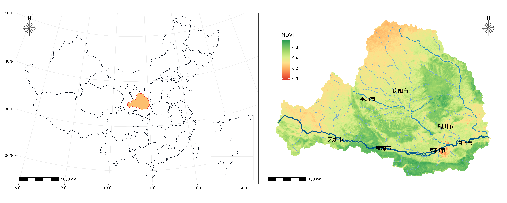

GeoComputation
GeoComputation is about using the various different types of
geodata and about developing relevant geo-tools within the
overall context of a ‘scientific’ approach.
Python Packages
R Packages
Books
Some Related Papers
Robust geographical detector
Geographically Optimal Similarity
Multiscale Geographically Weighted Regression
A geographically weighted artificial neural network
Deep learning and process understanding for data-driven Earth system science
Machine learning for data-driven discovery in solid Earth geoscience
Exploring complex water stress–gross primary production relationships: Impact of climatic drivers, main effects, and interactive effects
Extracting spatial effects from machine learning model using local interpretation method: An example of SHAP and XGBoost
Geographically Optimal Similarity
Multiscale Geographically Weighted Regression
A geographically weighted artificial neural network
Deep learning and process understanding for data-driven Earth system science
Machine learning for data-driven discovery in solid Earth geoscience
Exploring complex water stress–gross primary production relationships: Impact of climatic drivers, main effects, and interactive effects
Extracting spatial effects from machine learning model using local interpretation method: An example of SHAP and XGBoost
Make Maps
fig1 +
geom_sf(data=weihe,size = 3.5,
fill = "#FDBF6F", color = "#E31A1C")+
coord_sf(crs = st_crs(albers), default_crs = st_crs('epsg:4326')) +
scale_x_continuous(expand = c(0, 0),
limits=c(72,142),
breaks=seq(70, 140, 10)) +
scale_y_continuous(expand = c(0, 0),
limits = c(17,55.5),
breaks = seq(10, 60, 10)) +
theme_bw() +
theme(
axis.text = element_text(family ="serif",color="black"),
axis.title = element_blank()) +
annotation_scale(location = "bl") +
annotation_north_arrow(location = "tl", style = north_arrow_nautical(
fill = c("grey40", "white"),
line_col = "grey20")) +
annotation_custom(ggplotGrob(fig2),
xmin= 122,xmax = 138,
ymin=15,ymax = 29)
